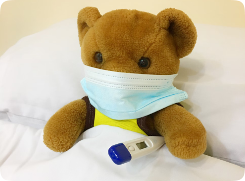
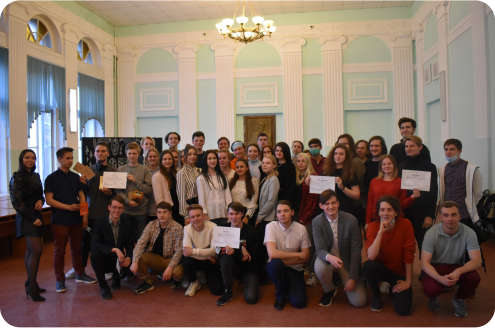
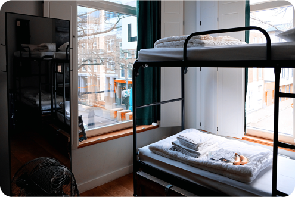

Раздел
Помощь
Узнай о том, как учится студент ТвГУ
Категория
Медицина
Студенты могут получить первичную медико-санитарную помощь в
медпунктах ТвГУ или в поликлиниках.
ВАЖНО!
Для получения медпомощи в поликлинике студенты обязаны иметь полис обязательного
медицинского страхования (полис ОМС), паспорт, СНИЛС. Полис ОМС предъявляется при любом
обращении к врачу.
Поликлиника
В условиях действия противоэпидемических мер, связанных с распространением новой
коронавирусной
инфекции, работа медпунктов вуза приостановлена, а персонал переведён для работы в
поликлинику.
В случае необходимости (нездорового состояния, болезни) можно обратиться в поликлинику, к которой прикреплён университет.
Это поликлиника №2 городской больницы №1 им. В.В. Успенского по адресу: Смоленский пер., 34, тел. регистратуры 32 18 31, 32 06 88).
Приём терапевтом осуществляется с 8:00 до 19:00.
В случае необходимости (нездорового состояния, болезни) можно обратиться в поликлинику, к которой прикреплён университет.
Это поликлиника №2 городской больницы №1 им. В.В. Успенского по адресу: Смоленский пер., 34, тел. регистратуры 32 18 31, 32 06 88).
Приём терапевтом осуществляется с 8:00 до 19:00.
Что делать, если мне нет 18 лет?
Для студентов, не достигших 18 лет и проживающих в общежитиях, приём врачей
осуществляется в городских поликлиниках по следующим адресам:
• Для проживающих и зарегистрированных в общежитиях на Спортивном пер., 11 (общежития «В» и «Г») и Студенческом пер., 13 (общежитие корп. «А») — г. Тверь, ул. А. Дементьева, 50, тел. 32-16-42;
• Для проживающих и зарегистрированных в общежитиях по ул. Прошина (общежития 1,3 и 4,5)— г. Тверь, ул. Артюхиной, 13, корп. 2, тел. 55-33-88.
Для студентов, не достигших 18-летнего возраста и проживающих в общежитиях университета, приём стоматолога ведётся по адресу: г. Тверь, пр-т Чайковского, 24, корп. 2Б, тел. 34 24 67.
• Для проживающих и зарегистрированных в общежитиях на Спортивном пер., 11 (общежития «В» и «Г») и Студенческом пер., 13 (общежитие корп. «А») — г. Тверь, ул. А. Дементьева, 50, тел. 32-16-42;
• Для проживающих и зарегистрированных в общежитиях по ул. Прошина (общежития 1,3 и 4,5)— г. Тверь, ул. Артюхиной, 13, корп. 2, тел. 55-33-88.
Для студентов, не достигших 18-летнего возраста и проживающих в общежитиях университета, приём стоматолога ведётся по адресу: г. Тверь, пр-т Чайковского, 24, корп. 2Б, тел. 34 24 67.
Служба психолого-педагогического сопровождения
Служба психолого-педагогического сопровождения Тверского государственного университета
является
структурным подразделением Тверского государственного университета, осуществляющимьи
координирующим деятельность Центра психологического образования и консультирования
факультета
психологии, Центра карьеры и содействия трудоустройству,Научно-образовательного центра —
«Профкарьера», Управления по внеучебной, социальной работе и молодёжной политике, в сфере
организации государственной политики в области психологопедагогического сопровождения
обучающихся университета, а также оказания психологической помощи работникам ТвГУ.
Первое посещение
При первом обращении в поликлинику
или медпункт необходимо предоставить
следующие документы:
∙ действующий полис ОМС, СНИЛС, оригинал и копию паспорта;
∙ заявление на прикрепление к медицинской организации (его можно написать в регистратуре медпункта).
∙ действующий полис ОМС, СНИЛС, оригинал и копию паспорта;
∙ заявление на прикрепление к медицинской организации (его можно написать в регистратуре медпункта).
Что делать, если заболел(а)?
При заболевании во время семестра необходимо предупредить старосту, преподавателя и
получить
задание для выполнения.
При заболевании накануне модуля, зачёта или экзамена можно будет выполнить задание после выздоровления.
Для этого необходимо обязательно обратиться к врачу и получить медицинскую справку* о временной нетрудоспособности.
Пропущенные именно за указанный период проверочные работы можно написать позже.В течение трёх рабочих дней со дня выписки необходимо предоставить справку в деканат факультета/института, заполнить и подать заявление на продление сроков аттестации.
При заболевании накануне модуля, зачёта или экзамена можно будет выполнить задание после выздоровления.
Для этого необходимо обязательно обратиться к врачу и получить медицинскую справку* о временной нетрудоспособности.
Пропущенные именно за указанный период проверочные работы можно написать позже.В течение трёх рабочих дней со дня выписки необходимо предоставить справку в деканат факультета/института, заполнить и подать заявление на продление сроков аттестации.
*В справке должен быть указан конкретный период нетрудоспособности.
После предоставления справок информация из ТвГУ направляется на проверку
в организации здравоохранения.
В случае отсутствия подтверждения студенту грозит отчисление.
В случае отсутствия подтверждения студенту грозит отчисление.

Категория
Справки
В некоторых жизненных ситуациях
требуется оформление дополнительных подтверждающих документов. Для этого разные подразделения
университета могут предоставить студентам справки, выписки из приказов и пр.
Первое посещение
Перед обращением за справкой нужно
заранее уточнить, куда она будет предъявляться.
Для получения справки необходимо обратиться в соответствующее подразделение, заполнить и подать заявление, форму которого предоставит сотрудник.
Для получения справки необходимо обратиться в соответствующее подразделение, заполнить и подать заявление, форму которого предоставит сотрудник.
Справка об учёбе
Справка об учёбе в ТвГУ подтверждает статус студента университета.
В зависимости от того, куда будет предоставляться справка, её можно взять в следующих подразделениях:
∙ В деканате факультета/института;
∙ В студенческом отделе кадров.*
В зависимости от того, куда будет предоставляться справка, её можно взять в следующих подразделениях:
∙ В деканате факультета/института;
∙ В студенческом отделе кадров.*
ул. Желябова, 33, каб. 223.
Налоговый вычет
Для получения налогового вычета необходимо подготовить следующие документы:
∙ Заказать справку об учёбе в ТвГУ в студенческом отделе кадров (ул. Желябова, 33, каб. 223)
∙ Получить копию лицензии и свидетельства об аккредитации вуза в управлении качества, лицензирования и аккредитации (ул. Желябова, 33, каб. 219)
∙ Копию договора и платежных документов в отделе платного обучения (ул. Желябова, 33, каб. 1)
∙ Заказать справку об учёбе в ТвГУ в студенческом отделе кадров (ул. Желябова, 33, каб. 223)
∙ Получить копию лицензии и свидетельства об аккредитации вуза в управлении качества, лицензирования и аккредитации (ул. Желябова, 33, каб. 219)
∙ Копию договора и платежных документов в отделе платного обучения (ул. Желябова, 33, каб. 1)
Справки (общежития)
Справку о проживании в общежитии
и плате за проживание в общежитии можно получить у заведующего общежитием.
Справка о доходах
Справка о доходах подтверждает, какие денежные выплаты были получены в университете. Это
могут
быть стипендии или материальная помощь.
Справка оформляется за конкретный промежуток времени — например, за три последних месяца. На основании этих данных рассчитывается среднемесячный доход за период.
Справка о доходах выдаётся в бухгалтерии ТвГУ.*
Справка оформляется за конкретный промежуток времени — например, за три последних месяца. На основании этих данных рассчитывается среднемесячный доход за период.
Справка о доходах выдаётся в бухгалтерии ТвГУ.*
*ул. Желябова, 33, каб. 14. с 8:00 до 17:00.
Академическая справка
Академическая справка — это документ об освоенных в вузе дисциплинах.
В академической справке перечисляются дисциплины, прослушанные и успешно сданные студентом за всё время обучения, с указанием оценок и отведённых на курс часов.
Академическая справка выдается в деканате факультета/института.
В академической справке перечисляются дисциплины, прослушанные и успешно сданные студентом за всё время обучения, с указанием оценок и отведённых на курс часов.
Академическая справка выдается в деканате факультета/института.
Дополнительно
Актуальную и подробную
информацию по оформлению
налогового вычета можно найти на сайте
Федеральной налоговой службы.
Сайт
ФНС
Категория
Стипендии
Информация о государственной академической стипендии.
1-й семестр
Все студенты, обучающиеся на бюджетной основе по очной форме, до конца первого семестра
будут
получать государственную академическую стипендию.
Далее она будет назначаться только тем, кто сдал сессию на «хорошо» и «отлично».
Далее она будет назначаться только тем, кто сдал сессию на «хорошо» и «отлично».
Как оформить?
Для получения стипендии студентам,
обучающимся на бюджетной основе, необходимо оформить банковскую карту
платёжной системы МИР. Карты оформляются в отделении ПАО Сбербанк по адресу: г.
Тверь,
ул.
Трёхсвятская д. 8.
Также можно оформить карты в АО «Альфа-банк» или ПАО ВТБ. При обращении в банк необходимо обязательно сообщить, что являетесь студентом ТвГУ и попросить оформить карту МИР для перечисления стипендиальных выплат.
Если студент уже имеет карту платежной системы МИР любого из указанных банков, обращаться повторно в банк нет необходимости.
Также можно оформить карты в АО «Альфа-банк» или ПАО ВТБ. При обращении в банк необходимо обязательно сообщить, что являетесь студентом ТвГУ и попросить оформить карту МИР для перечисления стипендиальных выплат.
Если студент уже имеет карту платежной системы МИР любого из указанных банков, обращаться повторно в банк нет необходимости.
Другие
Именная стипендия Президента РФ,
Правительства РФ и т.п. — при соответствии критериям назначения данных стипендий
(как
правило,
это отличная учёба
и научная деятельность).
Стипендии различных фондов или организаций, среди которых Фонд В.В. Потанина и другие.
Стипендии различных фондов или организаций, среди которых Фонд В.В. Потанина и другие.
Важно
Обращаем внимание на то, что получение государственной социальной стипендии носит
заявительный
характер и для её оформления необходимо обратиться с соответствующими документами в
службу
социальной поддержки и оздоровления ТвГУ.
2300₽
Государственная академическая стипендия составляет 1970₽ в месяц
Размер стипендии периодически индексируется.
Информация от 01.08.2021.
Информация от 01.08.2021.
3400₽
Повышенная государственная академическая стипендия, за отличную учёбу и сдачу сессии на
«отлично», составляет 2800₽ в месяц
Информация от 01.08.2021.
10 000 – 20 000₽
За особые успехи в учебной, научно-исследовательской, общественной, культурно-творческой или
спортивной деятельности, возможно, увеличение размера государственной академической
стипендии на
10 000-20 000 руб. в месяц
Информация от 01.08.2021.
3500₽
Государственная социальная стипендия назначается сиротам, инвалидам 1-2 группы, инвалидам с
детства, ЧАЭС, малообеспеченным гражданам и др.льготным категориям в размере – 3 500 руб.
Информация от 01.08.2021.
7000₽
Повышенная государственная социальная стипендия — для студентов 1 и 2 курсов, получающих
государственную социальную стипендию и имеющих по итогам
сессии оценки «хорошо» и «отлично» —
3400₽ в месяц
Информация от 01.08.2021.
Подробную информацию об именных
стипендиях можно получить в управлении образовательных программ, в деканате или у
тьютора.
Категория
Социальная поддержка
В университете предусмотрен комплекс мер социальной поддержки.
Большая часть этих мер связана с материальным стимулированием.
Материальная помощь
Для студентов, относящихся к «льготным»
категориям (сироты, инвалиды, пострадавшие в результате аварии на Чернобыльской АЭС и
т.д.),а
также для обучающихся из малообеспеченных семей предусмотрена дополнительная материальная
поддержка (оказывается, как правило, один раз в квартал).
На материальную помощь могут также рассчитывать те, у кого были значительные траты на лечение, дорогостоящее обследование. Материальная помощь оказывается и в случае возникновения сложных жизненных ситуаций (смерть родителей, пожары и т.п.).
На материальную помощь могут также рассчитывать те, у кого были значительные траты на лечение, дорогостоящее обследование. Материальная помощь оказывается и в случае возникновения сложных жизненных ситуаций (смерть родителей, пожары и т.п.).
Поддержка молодых семей
Для студентов, которые за время учёбы создали семьи, выделяется дополнительная материальная
помощь (ещё больше мер поддержки предусмотрены для семейных студентов, проживающих в
общежитиях
ТвГУ).
Помимо материальных выплат, для студентов есть возможность участия в физкультурных,
оздоровительных, культурно-массовых мероприятиях.
Социальная поддержка обучающихся заключается в назначении стипендиальных
выплат (см. раздел «Стипендии»), материальной помощи, предоставлении возможности участвовать
в
различных мероприятиях.
Меры социальной поддержки
преимущественно финансируются из средств федерального бюджета, поэтому могут быть
предоставлены
лишь
тем, кто обучается
на бюджетной основе по очной
форме.
Как получить поддержку?
Для получения мер социальной поддержки необходимо обратиться
в службу социальной поддержки
и оздоровления ТвГУ.
Основания назначения и порядок получения мер социальной поддержки, их размер опубликованы в
документах на сайте ТвГУ.
Социальная поддержка ТвГУ
Контакты
Служба социальной поддержки и оздоровления:
Студенческий пер., 13, корп. А,
комн. 406, 407
комн. 406, 407

Категория
Профсоюз
На все вопросы, связанные с жизнью студентов в стенах
университета, ответ один – профсоюз!
Что такое профсоюз?
Профсоюз (или первичная профсоюзная организация студентов ТвГУ) — это организация,
которая
решает проблемы студентов и защищает их права в вопросах выплаты стипендии и
материальной
помощи, проживания в общежитии, режима учебного
времени и отдыха.
Профсоюз – это семинары, тренинги и мероприятия университетского, городского и областного уровней. Студенты, состоящие в профсоюзе, могут бесплатно участвовать во всех мероприятиях профсоюза и приобретать билеты на сайте РЖД со скидкой (программа РЖД-Бонус).
Профсоюз – это семинары, тренинги и мероприятия университетского, городского и областного уровней. Студенты, состоящие в профсоюзе, могут бесплатно участвовать во всех мероприятиях профсоюза и приобретать билеты на сайте РЖД со скидкой (программа РЖД-Бонус).
«Интеллектуальный марафон»

«Крылья»
Кто такой профорг?
На каждом факультете/институте избирается профорг. Профорг – это представитель профсоюза на
своём факультете.
Профорг следит за составлением учебного расписания, участвует в заседаниях Совета
факультета,
оказывает помощь
членам профсоюза, информирует студентов о проведении профсоюзных мероприятий.
Как вступить в профсоюз?
Что надо сделать:
∙ Узнать имя профорга своего факультета/института. Именно он знает о Профсоюзе абсолютно всё, а если не знает, то подскажет где спросить;
∙ Заполнить бланк заявления о вступлении в Профсоюз. Получить бланк можно у профорга или в профкоме студентов. Получить на руки профсоюзный билет;
∙ Чтобы не пропустить возможность участия в мероприятиях, а также следить за новостями службы социальной поддержки и оздоровления, лучше подписаться на группу ВКонтакте.
∙ Узнать имя профорга своего факультета/института. Именно он знает о Профсоюзе абсолютно всё, а если не знает, то подскажет где спросить;
∙ Заполнить бланк заявления о вступлении в Профсоюз. Получить бланк можно у профорга или в профкоме студентов. Получить на руки профсоюзный билет;
∙ Чтобы не пропустить возможность участия в мероприятиях, а также следить за новостями службы социальной поддержки и оздоровления, лучше подписаться на группу ВКонтакте.
Категория
Профкарьера
Формирование профессиональных навыков начинается уже сейчас – в
стенах университета!
Все первокурсники переживают период адаптации к новым условиям обучения по-разному. Для
одних он
проходит
безболезненно, а другие сталкиваются с трудностями — начиная с проблем
в учёбе и заканчивая сложностями в общении с одногруппниками и преподавателями.
«Профкарьера»
Для того чтобы обучение было более
комфортным, в университете работает
Научно-образовательный центр «Профкарьера». Его сотрудники оказывают
содействие, в том числе проводя для студентов психодиагностическое тестирование и тренинги.
«Центр компетенций»
Для того, чтобы обучение было комфортными настраивало на постоянное самосовершенствование, в
университете работает Центр компетенций. Его сотрудники помогут определить сильные и слабые
студента и построить его индивидуальную траекторию развития.
Индивидуальные консультации
Также сотрудники центра готовы оказать индивидуальные консультации,
на которых студенты могут получить необходимую помощь в решении других
учебных и личных проблем, обрести уверенность в себе, развить свои потенциальные
возможности.
Научись планировать свое развитие
Участие в мероприятиях Центра компетенций позволит сформировать и закрепить важные личные
качества, преодолеть неуверенность перед экзаменами, научиться распределять время, найти
общий
язык с одногруппниками.
Где можно прокачать необходимые навыки:
∙ факультативы по построению карьеры и социальному проектированию для всех курсов
∙ мини-тренинги по развитию компетенций, квесты, воркшопы
∙ проектные мастерские «О’кей, добро»
∙ арт-мастерские от волонтеров-психологов на различные личностные темы
∙ фестивали, форумы
∙ обучения и экскурсии для амбассадоров Центра
Всю актуальную информацию
о мероприятиях, а также множество полезных материалов можно найти в телеграмм-канале «Центр компетенций Тверского государственного университета» (https://t.me/centr_komp_tvgu) и группе ВКонтакте «Профкарьера – регион 69» (https://t.me/centr_komp_tvgu).
∙ факультативы по построению карьеры и социальному проектированию для всех курсов
∙ мини-тренинги по развитию компетенций, квесты, воркшопы
∙ проектные мастерские «О’кей, добро»
∙ арт-мастерские от волонтеров-психологов на различные личностные темы
∙ фестивали, форумы
∙ обучения и экскурсии для амбассадоров Центра
Всю актуальную информацию
о мероприятиях, а также множество полезных материалов можно найти в телеграмм-канале «Центр компетенций Тверского государственного университета» (https://t.me/centr_komp_tvgu) и группе ВКонтакте «Профкарьера – регион 69» (https://t.me/centr_komp_tvgu).
Путь получения высшего образования нелёгок, особенно для того,
кто его начинает! Но в то же время
он открывает большие возможности
для студентов. Главное — узнать
об этих возможностях
и грамотно их использовать.
Определи будущее
Всем студентам доступно тестирование уровня развития надпрофессиональных компетенций от АНО
«Россия – страна возможностей». Сотрудники и амбассадоры Центра компетенций расскажут, как
его
пройти. По итогам диагностики студенты смогут, изучив индивидуальные отчеты, получить
обратную
связь на консультации со специалистом.
Тем, кто не уверен в правильности своего выбора, психодиагностическое тестирование с
использованием комплекса «Профориентатор» поможет найти направление будущей профессиональной
деятельности, в котором максимально совпадут желания, интересы, способности и личностные
качества.
Тренинги
Участие в тренингах позволит сформировать и закрепить важные личные качества, чтобы
преодолеть
неуверенность перед экзаменами, научиться планировать время,
найти общий язык с одногруппниками.
В течение учебного года мы регулярно проводим тренинги, которые позволят получить недостающие навыки:
∙ тренинг тайм-менеджмента;
∙ тренинг стрессоустойчивости и умения управлять собой;
∙ тренинг развития коммуникативных качеств;
∙ тренинг командообразования;
∙ тренинг развития навыков публичных выступлений.
В течение учебного года мы регулярно проводим тренинги, которые позволят получить недостающие навыки:
∙ тренинг тайм-менеджмента;
∙ тренинг стрессоустойчивости и умения управлять собой;
∙ тренинг развития коммуникативных качеств;
∙ тренинг командообразования;
∙ тренинг развития навыков публичных выступлений.
Поработай над собой
Сотрудники Центра проводят индивидуальные консультации, на которых студенты могут получить
необходимую помощь в решении учебных проблем, профессиональном самоопределении и раскрытии
потенциальных возможностей.
Контакты
ул. Советская, 58, каб. 309-310
пн-чт 10:00–18:00
пт 10:00–17:00
Категория
Трудоустройство
Позаботься о начале карьеры можно уже во время обучения
Центр трудоустройства
Основная цель деятельности центра –
помощь студентам и выпускникам
в поиске работы, места для прохождения практики, стажировки, а также развитие дополнительных
навыков
для эффективного поведения на рынке труда.
Вакансии
Компании и организации обращаются
в Центр для информирования студентов
о наличии подходящих профильных вакансий.
Обратившись на Молодёжную биржу труда, вы также сможете найти подработку с гибким графиком, сезонную (например, в летний период) или разовую работу, работу на полный день или частичную занятость, а также возможность для практики или стажировки.
Обратившись на Молодёжную биржу труда, вы также сможете найти подработку с гибким графиком, сезонную (например, в летний период) или разовую работу, работу на полный день или частичную занятость, а также возможность для практики или стажировки.
Пробные собеседования
Для тех, кому совсем скоро предстоит выход
на рынок труда, в Центре проводятся тренинги по составлению резюме и тренинг
«Пробное собеседование», которые раскроют тонкости представления своих конкурентных
преимуществ
при поиске работы.
Информация о новых вакансиях и событиях, полезные советы по поиску работы
публикуются в социальных сетях Центра.
Осознанный выбор образования и профессии – первый шаг на пути к работе
мечты. Для помощи студентам и выпускникам в поиске призвания и подходящей работы в ТвГУ
действует Центр содействия трудоустройству молодёжи
(Молодёжная биржа труда).
Hard skills
При существующей сегодня высокой
конкуренции на рынке труда от молодых специалистов ждут владения разнообразными карьерными
компетенциями — это как традиционные hard skills,
так и особенно актуальные в современном мире soft skills, или «гибкие навыки».
В Центре можно пройти тренинги от специалистов, направленные на развитие «гибких навыков»: развитие эмоционального интеллекта, навыков самопрезентации, делового общения и пр., а также пройти мастер-классы от ведущих тренеров компаний Тверского региона.
Понять свои карьерные возможности и выстроить карьерную стратегию поможет индивидуальная консультация с психологом Центра — «Карьерный коучинг».
В Центре можно пройти тренинги от специалистов, направленные на развитие «гибких навыков»: развитие эмоционального интеллекта, навыков самопрезентации, делового общения и пр., а также пройти мастер-классы от ведущих тренеров компаний Тверского региона.
Понять свои карьерные возможности и выстроить карьерную стратегию поможет индивидуальная консультация с психологом Центра — «Карьерный коучинг».
Контакты
г. Тверь, ул. Советская, 58, каб. 203
Категория
Общежития
Иногородним студентам на период обучения в ТвГУ предоставляются
места в общежитии (при наличии жилого фонда)
Помощь с размещением
Содействие и контроль в вопросах размещения и проживания студентов в общежитии
осуществляется
администрацией студенческого городка, комендантами общежитий, руководствоми тьюторами
факультетов/институтов.
Размещение
Со студентами, которым предоставлено место в общежитии и прибывшими для заселения,
заключается
договор найма жилого
помещения, выдаются ключи, постельные
принадлежности, оформляется пропуск.
Оплата проживания
При проживании в общежитии необходимо своевременно вносить оплату. Оплата
производится ежемесячно, не позднее
10 числа каждого месяца, следующего за
расчетным (оплата за сентябрь – не позд-
нее 10 октября и т.д.). Для оплаты студент вносит платёж на лицевой счёт по рекви-
зитам, указанным в договоре, или у касси-
ра в общежитии (график работы кассира зависит от корпуса общежития).
нее 10 октября и т.д.). Для оплаты студент вносит платёж на лицевой счёт по рекви-
зитам, указанным в договоре, или у касси-
ра в общежитии (график работы кассира зависит от корпуса общежития).
Правила посещения
Основные правила посещения:
∙ в своё общежитие можно зайти круглосуточно;
∙ чтобы зайти в другие общежития, необходимо отметиться на вахте и оставить документ, удостоверяющий личность;
∙ гости могут находиться в общежитии с 6:00 до 23:00 .
∙ в своё общежитие можно зайти круглосуточно;
∙ чтобы зайти в другие общежития, необходимо отметиться на вахте и оставить документ, удостоверяющий личность;
∙ гости могут находиться в общежитии с 6:00 до 23:00 .
Гости
Гостей необходимо встретить. Во время
посещения проживающий несёт ответ-
ственность за нахождение гостя и соблю-
дение им правил нахождения в обще-
житии. После 23:00 посетители не могут оставаться в общежитии.
ственность за нахождение гостя и соблю-
дение им правил нахождения в обще-
житии. После 23:00 посетители не могут оставаться в общежитии.
